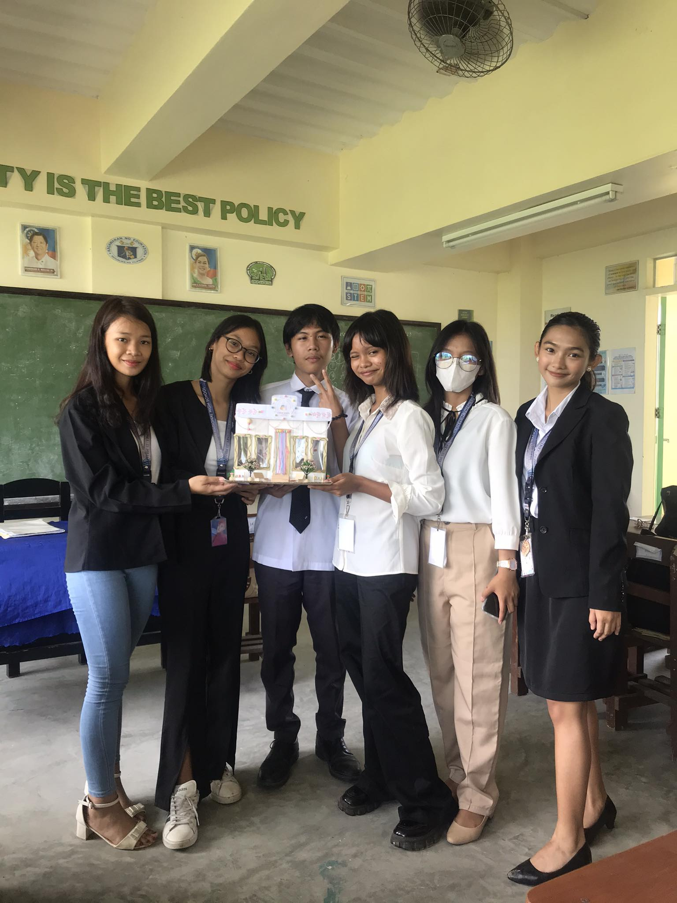

IMAGI-KNIT is a crochet shop founded by a group of friends in Cabangan. It is the shop’s mission to provide high-quality crochet products that will satisfy customers. We aim to offer a varied range of unique and carefully handmade objects to go above and beyond our customers' expectations by providing outstanding products that bring joy and satisfaction. It is the shop’s vision to be the best option for high-quality crochet, helping consumers to express their individual sense of aesthetics through handmade artistry.
IMAGI-KNIT will be registered as a sole proprietorship type of business to the Department of Trade and Industry (DTI). A barangay clearance will also be secured before applying for a mayor’s permit to operate as a home-based business micro enterprise. The Bureau of Internal Revenue (BIR) registration will also be done after getting all the necessary registration documents and permits from DTI, barangay, and mayor’s office.